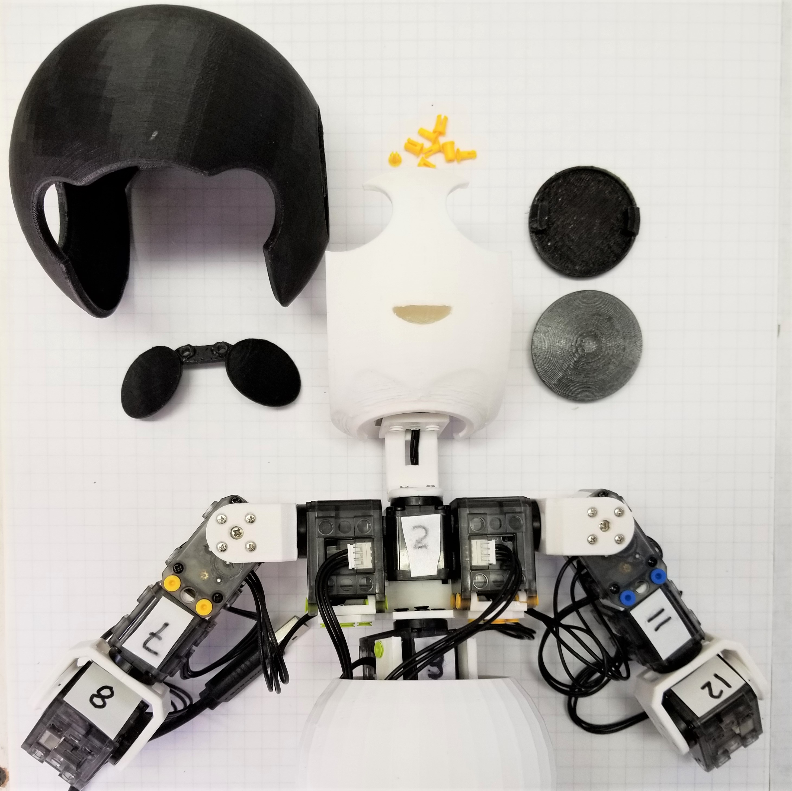
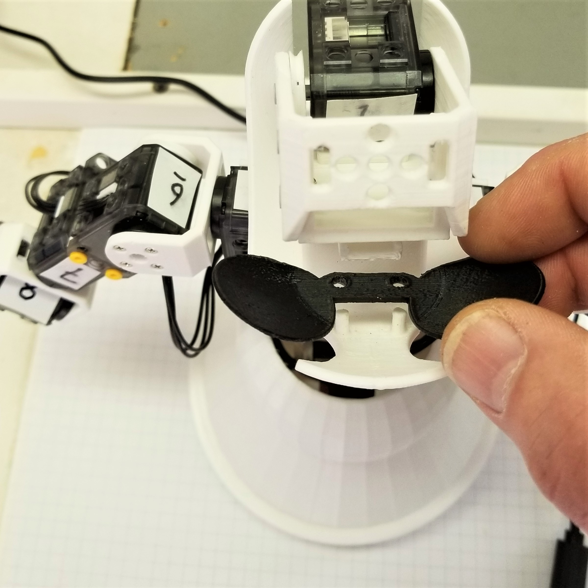
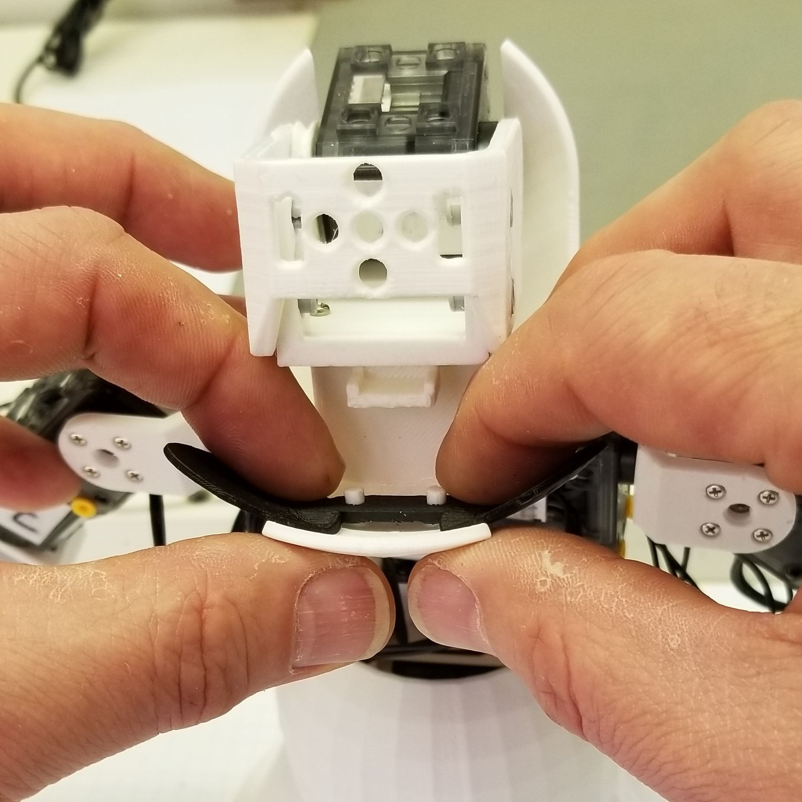
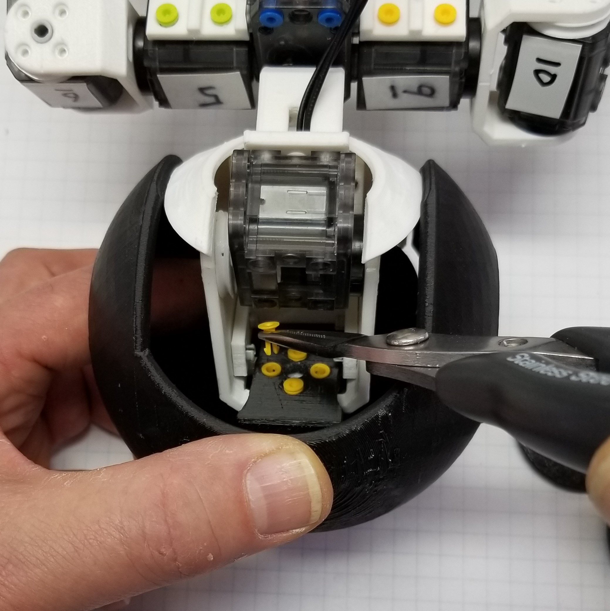
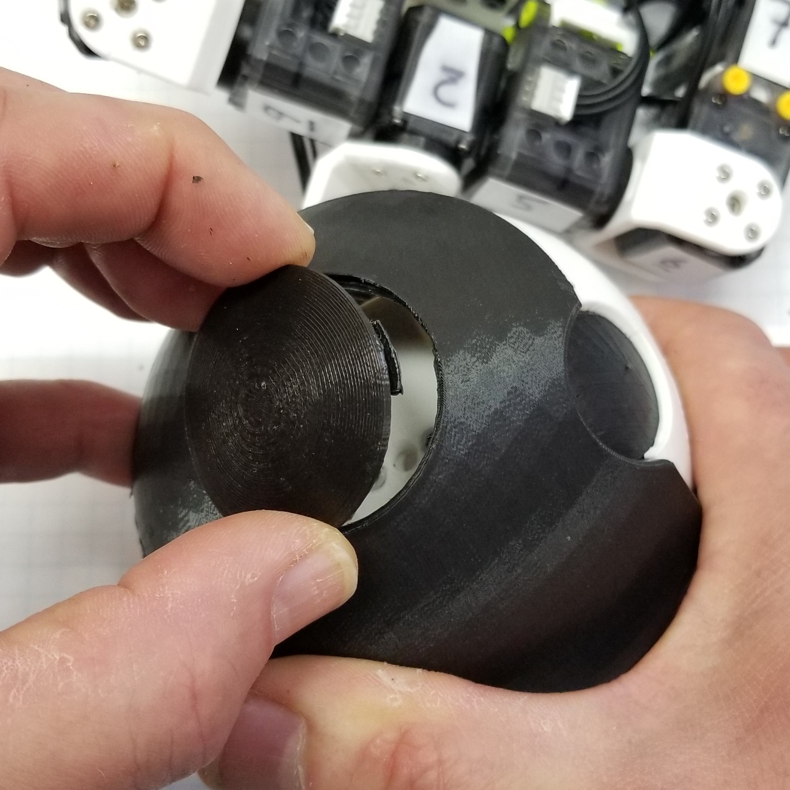
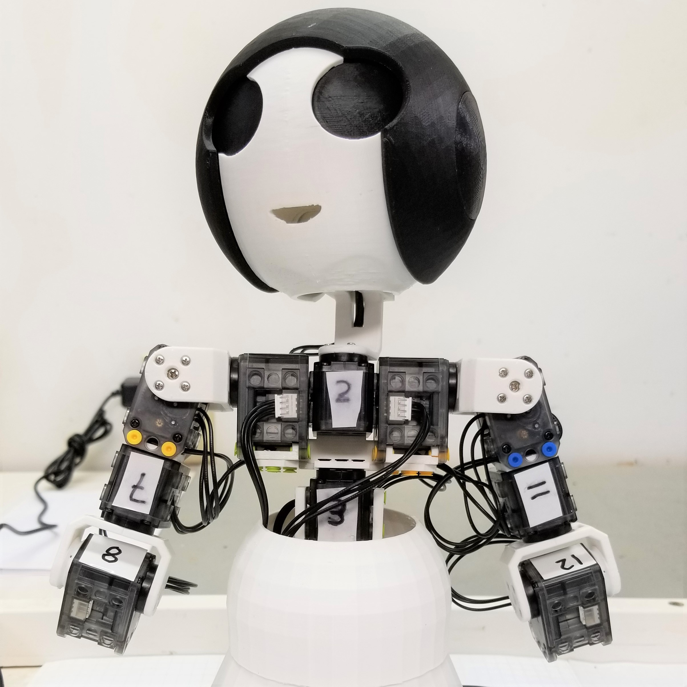

Microsoft Applied Robotics Research Library
Microsoft Applied Robotics Research Library
Open Source Samples for Service Robotics

gestureBot Construction Guide
Session 8: Complete the Head
In this session we will 3D-print the hands and arm servo covers while we assemble the the head components.
Parts:
- gestureBot (partially assembled through Session 7)
- (4) short plastic rivets
- Hood 3D-printed in Session 7, the hood provides a cosmetic cover for the head structure assembly.
- Eyes 3D-printed in Session 6, the eyes provide a cosmetic cover addition to the face component.
- Ear 3D-printed in Session 6, the ears provide cosmetic covers and removable access to the interior of the head assembly without requiring the hood to be removed.
Tools:
- PH0 Phillips screwdriver
- needle nose pliers

Procedure:
First, start 3D-printing the parts required for future sessions:
Second, attach the eyes, hood, and ears:
-
Mount the eyes component by inserting the two posts behind the face into the two holes in the bridge between the eyes.  Tip: To avoid breaking the face component, be careful to support the face as you push the eyes onto the posts. 
-
Mount the hood by tilting the head assembly forward, sliding the hood onto the head swing bracket and attaching the hood to the bracket with (4) rivets.  Tip: Using a pair of needle-nose pliers may be helpful in inserting the rivets.
-
Attach the ears buy snapping each into the holes on the sides of the hood. 
-
Inspect the complete head assembly. 